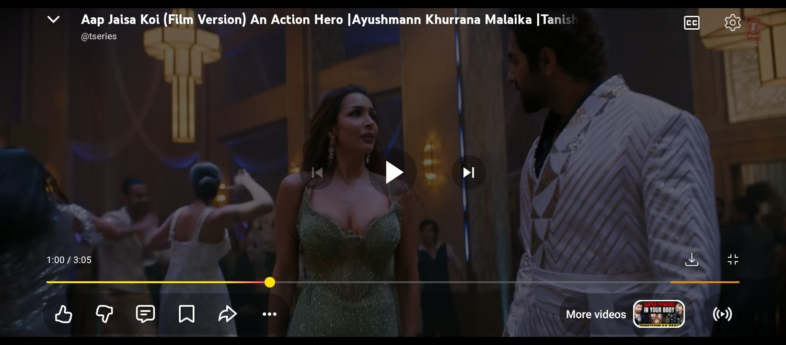
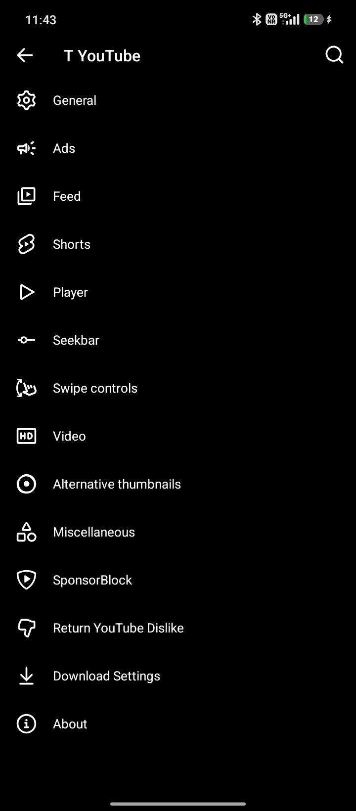
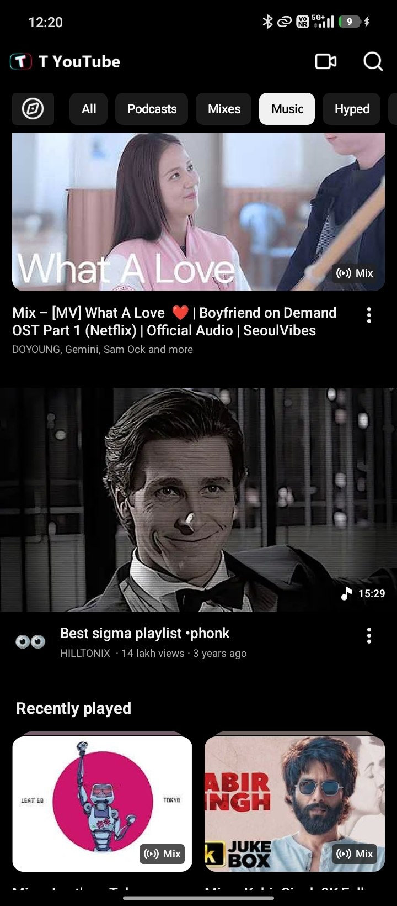
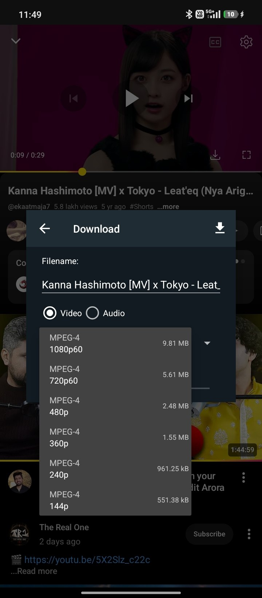
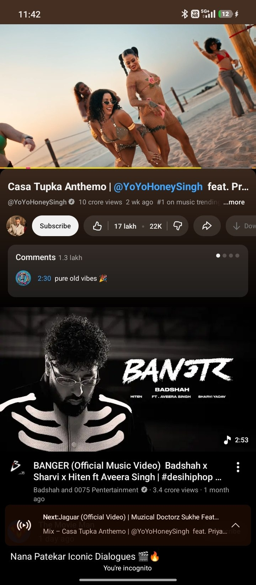

One download, one icon. microG-RE is already inside the T YouTube APK — open the app and a short setup screen installs it for you. No second file, no file manager, no manual microG hunt. This page shows the whole thing, step by step.
The whole install, start to finish. If the video is still processing, the written steps below are complete on their own.
▸ Tap play — the recording is under 15 MB, so it should start quickly.
Two installs, one file to download. Android shows its own confirmation once.
Tap the download button below, open the APK, and tap Install. Android asks you to allow "Install unknown apps" for your browser or file manager — turn it on and come back. This prompt only appears once.
The first launch shows a short welcome screen. Tap Start setup, then Install on the microG row. Android asks for "Install unknown apps" for T YouTube this time — turn on Allow from this source and go back. The install continues on its own.
Turn on notifications (optional) and battery exemption (recommended on Xiaomi, Samsung and other aggressive battery managers). Then tap Continue → Open T YouTube. Sign in and play a video.
Real captures from the v1.0.0 build. Use them to confirm you did each step right.





One APK. microG is already inside it.
Includes the official MicroG-RE 7.3.0 -noicon builds. Open the app once and setup installs the right one for your phone. Installs straight over v1.0.1 / v1.1.0 without touching your logins, settings or downloads.
≈300 MB · Android 10+ · arm64-v8a + armeabi-v7a Download T YouTubeYou only need this if your phone is x86-only (some emulators), or if you would rather install microG yourself. Use the official -noicon build so the launcher stays clean; T YouTube detects it and skips the install step.
Official builds · Apache-2.0 Get microG-RE from the sourceThe SHA-256 for every build is published on its release page. v1.1.0 (rollback) is 337f55a17c8fdd1ae458a4ab9e76ca3bd1335c3865ca0bb5de055fd078496d5c.
v1.2.0 ends the old two-file routine. The official MicroG-RE APK now ships inside T YouTube, and a short first-run setup installs it. There is no second download, no file manager, and no second launcher icon.
arm64-v8a and armeabi-v7a. The app verifies the file and
installs it as-is — nothing is modified or re-signed.checkGmsCore() used to
open a microG download page when the service was missing. It is now a no-op, so
nothing can pop up behind the setup screen.Bundled microG · MicroG-RE 7.3.0 -noicon · package app.revanced.android.gms · versionCode 255070304
v1.1.0 is still published and still installs in place, but it expects you to install microG-RE yourself first. Use it only if you want to roll back — same signature, no data loss. It shipped the Shorts brand loop, the restored download confirm button and the earlier 14 sp watermark.
Size: 222,566,961 bytes
SHA-256: 337f55a17c8fdd1ae458a4ab9e76ca3bd1335c3865ca0bb5de055fd078496d5c
Purely a convenience. If you would rather not change anything, skip this page — everything in the app already works.
Android allows one app per website. While the official YouTube app is verified for youtube.com, T YouTube cannot take those links over silently — Google already owns them. You have to hand the links over once, in Android settings.
Shortcut: these two buttons jump straight to each app’s Android settings page when this guide is open on the phone. If your browser blocks them, use the steps above — they are the same screens.
Do nothing on this page. Links keep opening in the official YouTube app or your browser, exactly as before. You can come back to this guide at any time, and you can undo step 1 the same way if you change your mind.
Menu names differ slightly by phone maker (Samsung, Xiaomi, Pixel). Look for “Open by default”, “Default apps” or “Supported links” in the app’s info page.
These cover almost every failure. Try them in order.